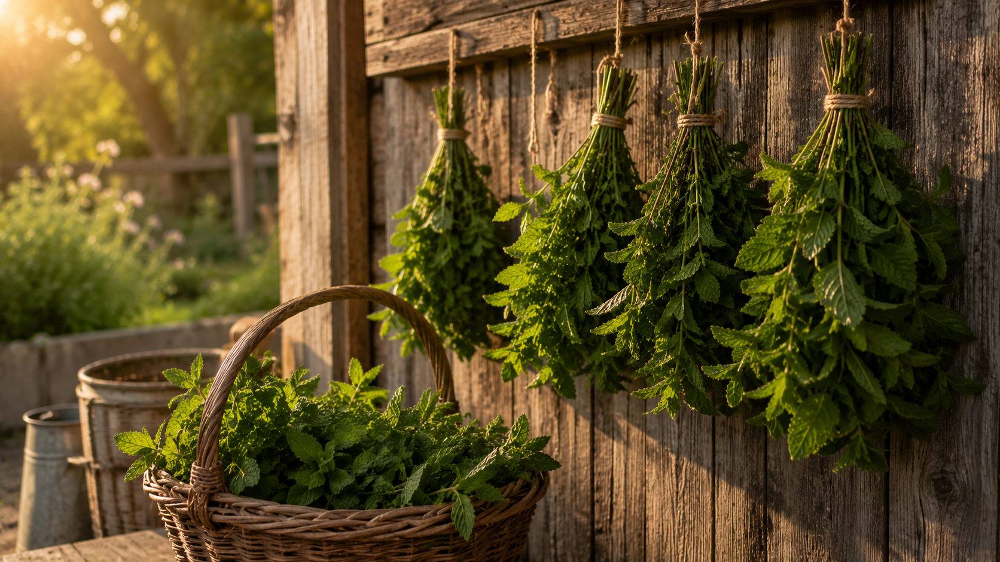

Explore more
Mint Recipes & Guides
One plant, four ways to use it. Every page below starts with the mint growing in your garden right now.

Garden Technique
Harvest & Preserve Mint
When to cut, how to store fresh stems, and the best ways to preserve a glut — syrup cubes, infusions, and what actually works in the freezer.
Read the guide
Bar Pantry · 20 min
Mint Simple Syrup
The most useful thing you can make with fresh garden mint. Steep, strain, and keep in the fridge for three weeks — or freeze in cubes for winter.
Syrup recipe
Cocktail · Summer
Garden Mojito
White rum, homegrown mint syrup, fresh lime, and soda. No muddling — cleaner flavor, consistent results, and everything from the garden.
Full cocktail recipe
Mocktail · Alcohol-Free
Sparkling Mint Limeade
Mint syrup, fresh lime juice, and sparkling water. One of the best things to come out of the garden all summer — no spirit needed.
Full recipe